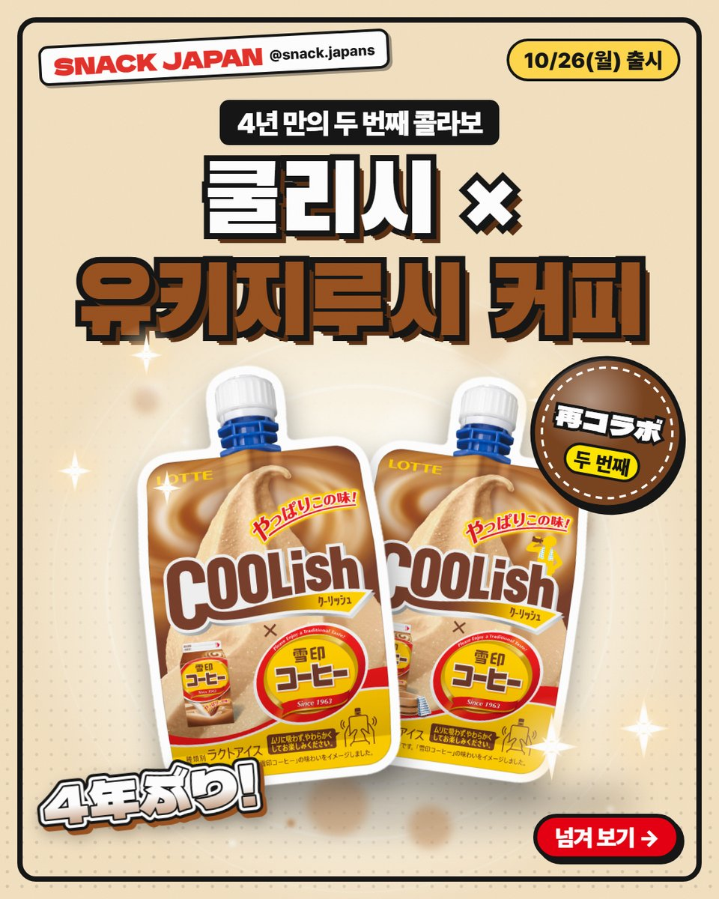
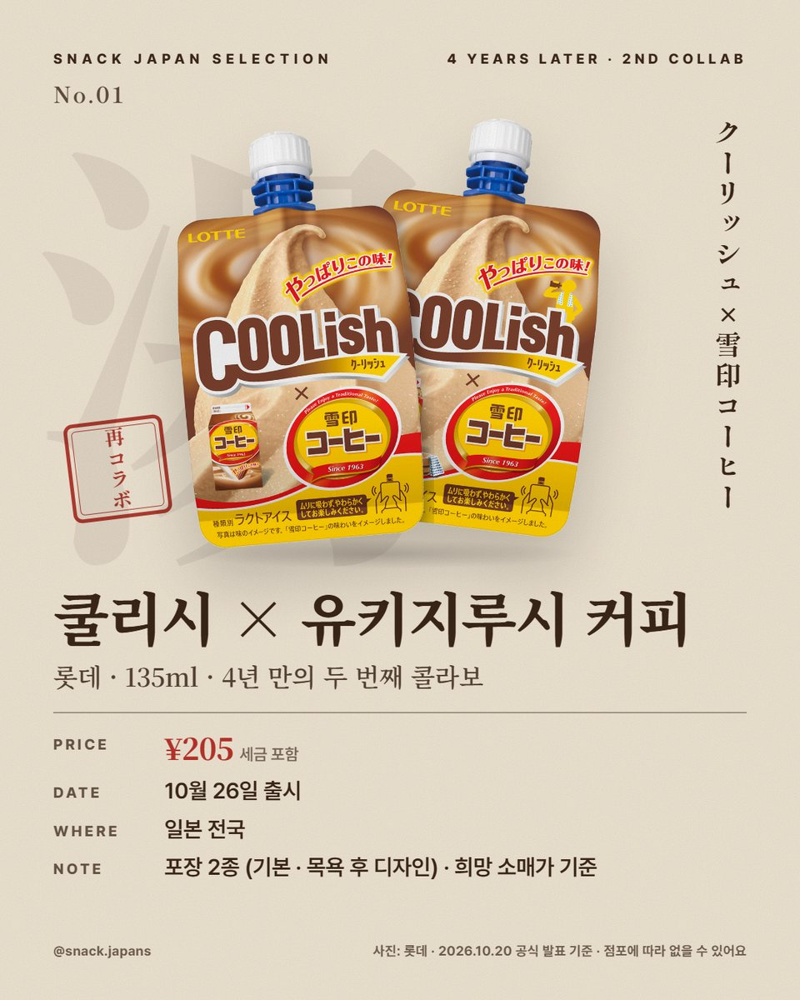
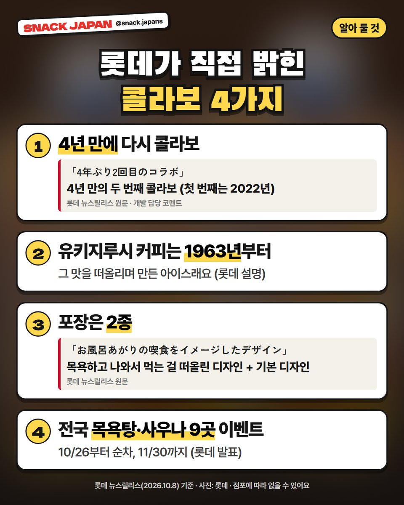
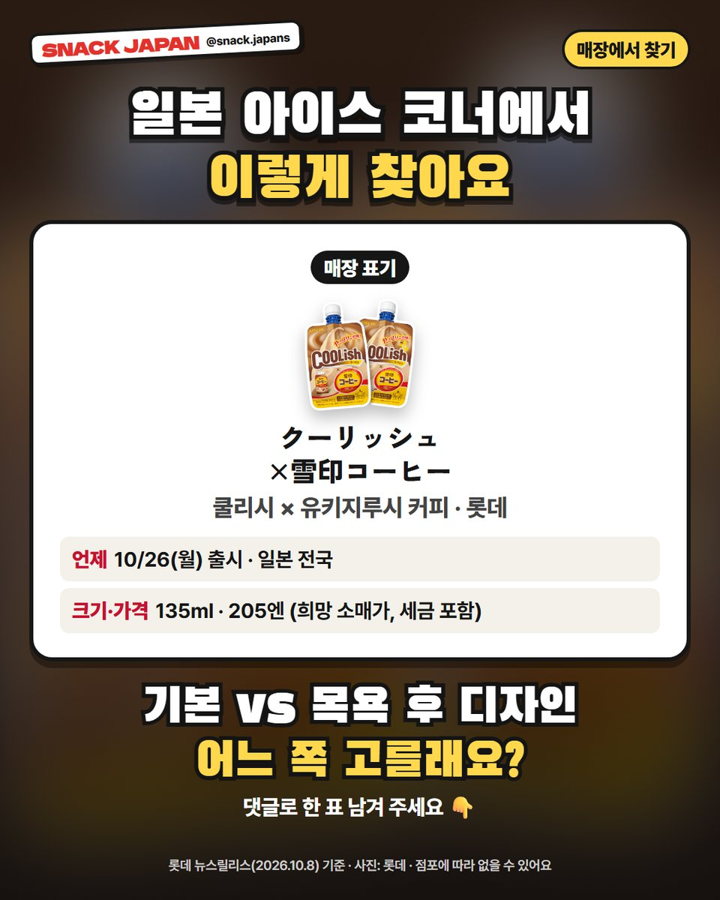

일본 쿨리시 유키지루시 커피 10월 26일 출시, 4년 만에 돌아온 두 번째 콜라보
롯데 쿨리시와 유키지루시 커피가 4년 만에 다시 만났어요. 포장 2종에 목욕탕·사우나 이벤트까지!
일본 아이스 쿨리시가
유키지루시 커피랑 4년 만에 다시 만났어요 ☕🍦
10월 26일(월) 일본 전국 출시예요.
롯데 발표 기준으로 정리해 볼게요!

1. 10월 26일(월) 일본 전국 출시!
- 만드는 곳: 롯데
- 출시: 10월 26일(월), 일본 전국
- 크기: 135ml (락토아이스)
- 가격: 사진 카드에 정리해 뒀어요

2. 4년 만의 두 번째 콜라보
롯데 뉴스릴리스에 '4년 만의 두 번째 콜라보'라고 나와 있어요.
첫 번째는 2022년이었대요 (롯데 개발 담당 코멘트).
1963년부터 팔아 온 '유키지루시 커피'의 맛을 떠올리며 만든 아이스래요 (롯데 설명).

3. 포장은 2종!
- 기본 디자인
- 목욕하고 나와서 먹는 걸 떠올린 디자인 (お風呂あがりの喫食をイメージしたデザイン)
4. 전국 목욕탕·사우나 9곳에서 이벤트
롯데 발표로는 전국 인기 목욕탕·사우나 9곳에서 콜라보 이벤트를 해요.
- 기간: 10월 26일부터 순차, 11월 30일까지 (웰비 사카에만 10월 29일부터)
- 지역: 도쿄 3곳, 사이타마(소카) 1곳, 나고야 2곳, 오사카(히가시오사카) 1곳, 후쿠오카 1곳, 삿포로 1곳
- 웰비 사카에·니코 리프레를 뺀 시설엔 쿨리시 바닐라 향 탕도 있대요
- 이벤트 시설에서 쿨리시를 사면 스티커를 선착순으로 준대요

5. 매장에서 이렇게 찾아요
- 일본 이름: クーリッシュ×雪印コーヒー
- 참고: 점포에 따라 없을 수 있어요
총평
- 기준: 10월 20일 확인한 롯데 공식 발표 (10월 8일 뉴스릴리스)
- 추천: 일본 아이스 신상 좋아하는 분, 일본 목욕탕·사우나 여행 가는 분
기본 디자인 vs 목욕 후 디자인,
여러분은 어느 쪽 고를래요? 🙋